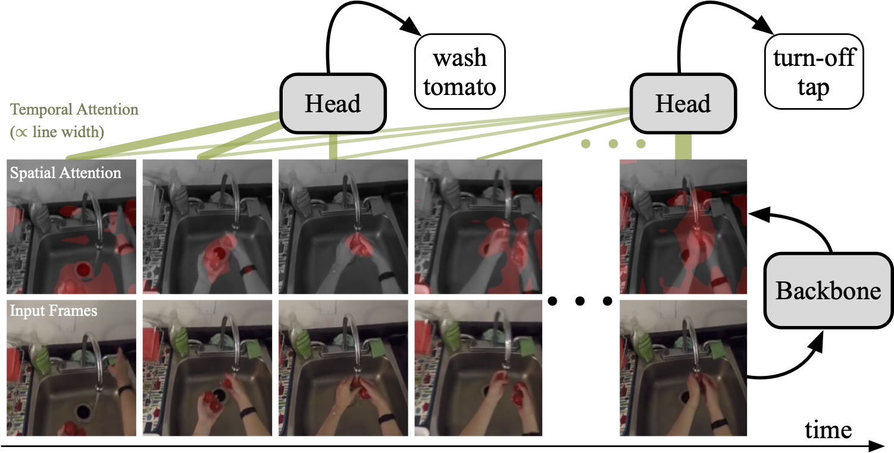
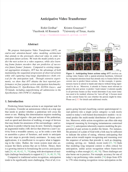

Anticipative Video Transformer
|  |
| We propose Anticipative Video Transformer (AVT), an end-to-end attention-based video modeling architecture that attends to the previously observed video in order to anticipate future actions. We train the model jointly to predict the next action in a video sequence, while also learning frame feature encoders that are predictive of successive future frames' features. Compared to existing temporal aggregation strategies, AVT has the advantage of both maintaining the sequential progression of observed actions while still capturing long-range dependencies--both critical for the anticipation task. Through extensive experiments, we show that AVT obtains the best reported performance on four popular action anticipation benchmarks: EpicKitchens-55, EpicKitchens-100, EGTEA Gaze+, and 50-Salads, including outperforming all submissions to the EpicKitchens-100 CVPR'21 challenge. |
People
 Rohit Girdhar |
Kristen Grauman |
Paper
|  |
R. Girdhar and K. Grauman Anticipative Video Transformer IEEE/CVF International Conference on Computer Vision (ICCV), 2021 [arXiv] [code/models] [workshop paper] [supplementary] [BibTex]
|

Sample Results
For each video, we pause every 1 second and show the predicted future action using AVT (after attending to the past so far), and the ground truth (GT) future action (if labeled). We also overlay the frame with spatial attention from AVT-b.
Acknowledgements
Authors would like to thank Antonino Furnari, Fadime Sener and Miao Liu for help with prior work; Naman Goyal and Myle Ott for help with language models; and Tushar Nagarajan, Gedas Bertasius and Laurens van der Maaten for feedback on the manuscript.